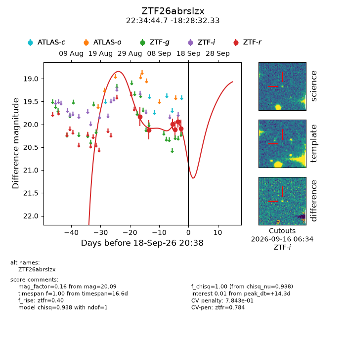
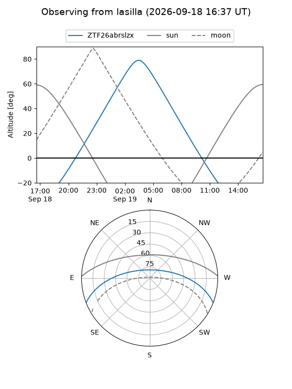
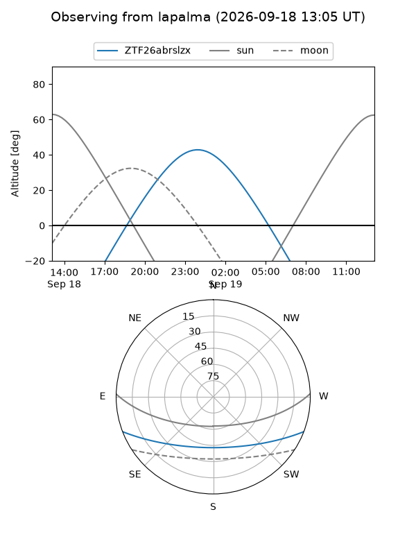
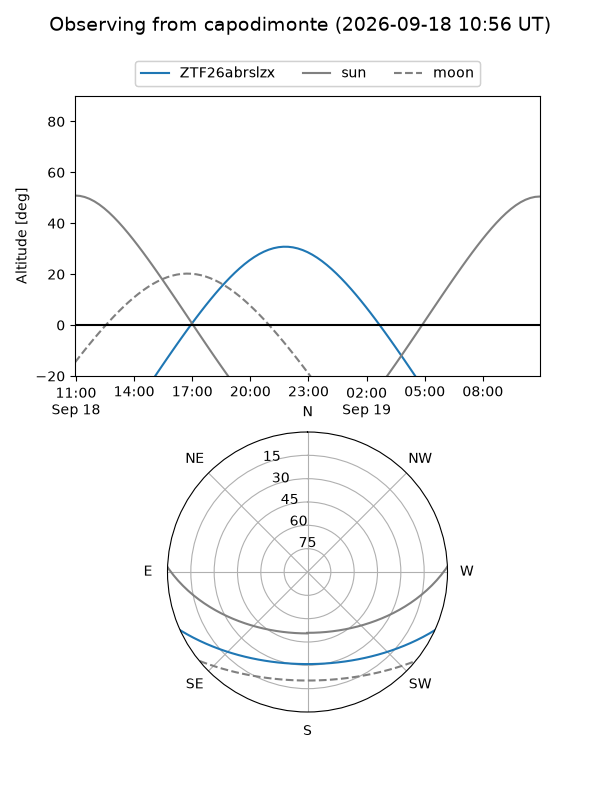
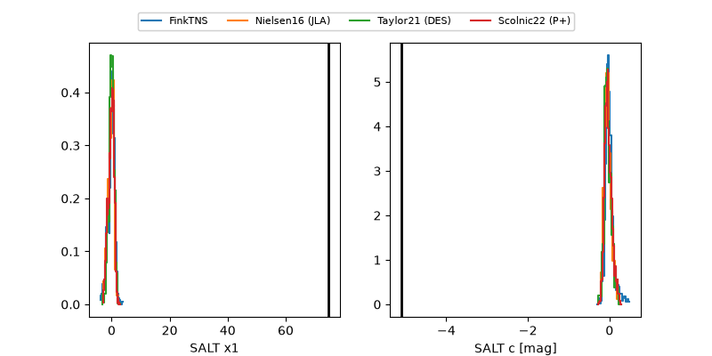

ZTF26abrslzx
Target ZTF26abrslzx at 2026-09-19 08:35
Aliases and brokers:
FINK-ZTF: ztf.fink-portal.org/ZTF26abrslzx
Lasair-ZTF: lasair-ztf.lsst.ac.uk/objects/ZTF26abrslzx
ALeRCE-ZTF: alerce.online/object/ZTF26abrslzx
Direct TNS query: direct search
alt names
ZTF26abrslzx (ztf,fink_ztf)
Coordinates:
equatorial (ra, dec) = 338.6862,-18.47565
equatorial (HMS+DMS) = 22:34:44.68,-18:28:32.33
galactic (l, b) = (41.0267,-57.44501)
Flags:
peak dt: +14.8
likely cv: !!
Photometry:
last ztfr=20.09
6 ztfr detections
Lightcurve

Visibility



Additional plots
